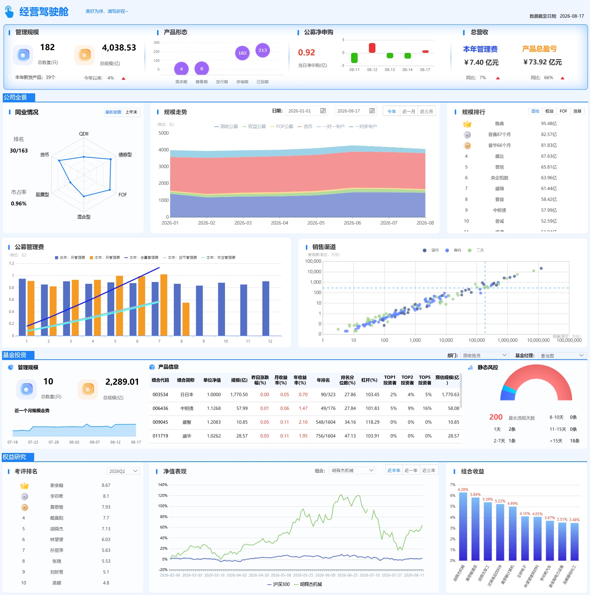

一句话定位
视觉上靠近 Ant Design Pro / 内部投研台，而不是 Bloomberg 黑底终端，也不是互联网理财 App。 图表用 ECharts 默认能力即可复刻：雷达、堆叠面积、胶囊柱、对数散点、半环仪表。
这是一套给公募管理人内部使用的经营驾驶舱语言：浅冷色画布、白卡片拼贴、左侧蓝竖条标题、KPI 用大号等宽数字压住扫读节奏。 它服务的不是「好看」，而是管理层 30 秒看全公司、投研一层下钻到产品与研究员。
视觉上靠近 Ant Design Pro / 内部投研台，而不是 Bloomberg 黑底终端，也不是互联网理财 App。 图表用 ECharts 默认能力即可复刻：雷达、堆叠面积、胶囊柱、对数散点、半环仪表。

全公司只数、规模、产品生命周期、当日净申购、本年管理费与产品盈亏。只放「此刻该不该紧张」的数。
同业雷达（排名/市占）→ 规模结构走势 → 产品排行 → 管理费节奏 → 渠道质量散点。回答「我们在行业里站哪」。
按部门/经理切片：规模 KPI + 产品明细表 + 静态风控。表是主界面，图是旁证。
研究员考评榜 → 模拟组合 vs 基准净值 → 行业收益条。投研绩效与观点验证，不和经营 KPI 混排同一语义层。
规模堆叠建议固定语义色，不要每页重排：固收 #5B7CFA · 权益 #5DCAA5 · FOF #F2C14E · 货币 #F08A8A。销售渠道用更深的银行蓝 vs 更浅的三方绿，对数轴才分得开。
目标宽度 1600–1760，卡片圆角 10px，间距 10px，内边距 12。卡片白底 + 1px #E9F0F6 边框 + 极轻投影。不要大阴影、不要玻璃拟态整页、不要深色模式作为默认。
经营行 1.05 / 1.15 / 1.2 / 1.15；全景 0.92 / 1.55 / 0.95；投资 0.78 / 1.85 / 0.78；研究 0.78 / 1.55 / 1。中间永远给「走势/表」，两侧给 KPI 和榜单。
| 组件 | 用法 | 交互要点 |
|---|---|---|
| 蓝竖条标题 | 每个卡片唯一标题 | 不放图标字体，3×14 圆角矩形即可 |
| 玻璃拟态 3D 图标 | 只用于规模/只数 KPI | 蓝=数量，橙=金额，不要到处用 |
| Segmented 胶囊 | 今年/近一月；固收/权益 | 选中填品牌蓝，未选灰字白底 |
| 日期对 + 快捷档 | 规模走势 | 快捷档改写区间，手动改日期则档位置「今年」语义 |
| 部门/经理下拉 | 基金投资切片 | 部门驱动经理列表与 KPI/表 |
| 金银铜徽章 | 规模榜、考评榜 Top3 | 4 名以后用灰序号，不要再上色 |
| 密集表 | 产品信息 | 表头冻结、红涨绿跌、行 hover 浅蓝 |
| 半环风控 | 违规时长结构 | 长尾用红，短违规用蓝；中心只放「最长天数」 |
X 类目、Y 与半径都映射只数。紫色，白字。发行期为 0 就留空，不要画假点。
零轴上下对称，红入绿出。当日 KPI 用偏赭红大字，避免和涨跌红完全撞色。
六边形品类，面积浅蓝。旁边并排排名/市占，不要把数字塞进雷达中心。
无描边、图例置顶。货币与固收通常是主体，颜色饱和度压住，避免「彩虹蛋糕」。
去年蓝柱 / 今年橙柱，累计用线。未发生月份用 null，不要补 0。
规模跨数量级必须 log。银行/券商/三方分色，tooltip 出渠道名。
过滤下沉到卡片，不在顶栏堆全局筛选项。页头只留「数据截至日期」。榜单/表行可点，驱动右侧图。所有同比箭头遵循 A 股红涨绿跌。缺数标「—」或空，不编 0。
不要暗色大屏、不要 3D 饼图、不要把投研组合收益和公司管理费画在同一张图。不要在客户材料里写真实产品名。不要把风控半环做成游戏化血条。
前端： React / Vue 3 + CSS Grid + ECharts 5。卡片做成 Widget 协议：title / filters / renderer / queryKey。
布局： 先做 1920 工作台，再考虑 1440 压缩字号；移动端另做「KPI 简报」而不是硬缩这张屏。
数据： 经营层 T+1 估值与 TA 申赎；同业用协会/定期报告披露；投研用内部模拟盘与基准。时间戳必须可追溯。
权限： L0–L1 管理层；L2 按投资部门；L3 研究团队。同一套视觉，不同 query。
下一步： 先冻结 Widget 清单与口径字典，再接真实接口。原型见 驾驶舱。